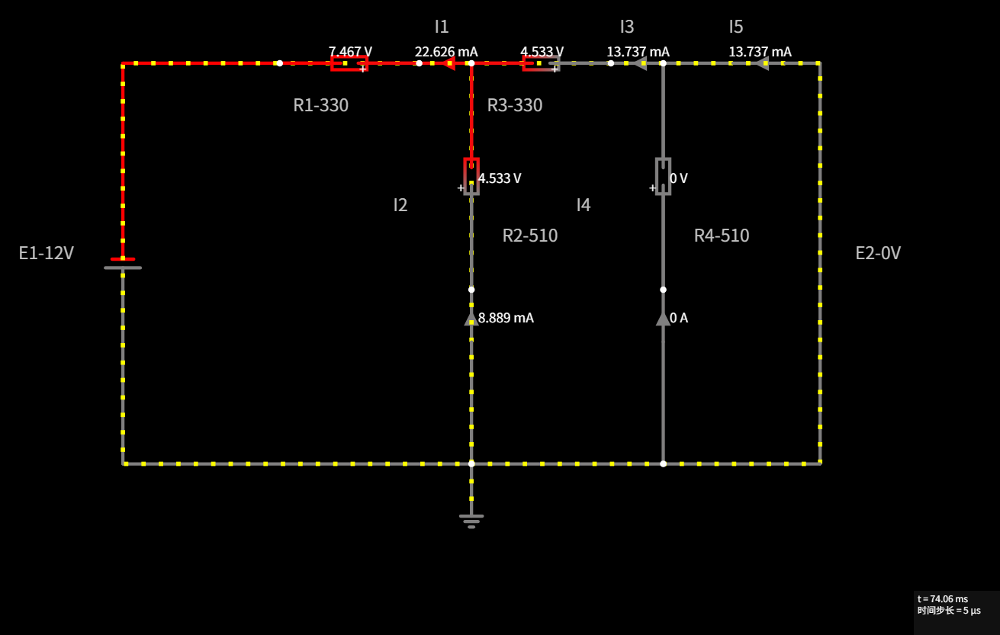
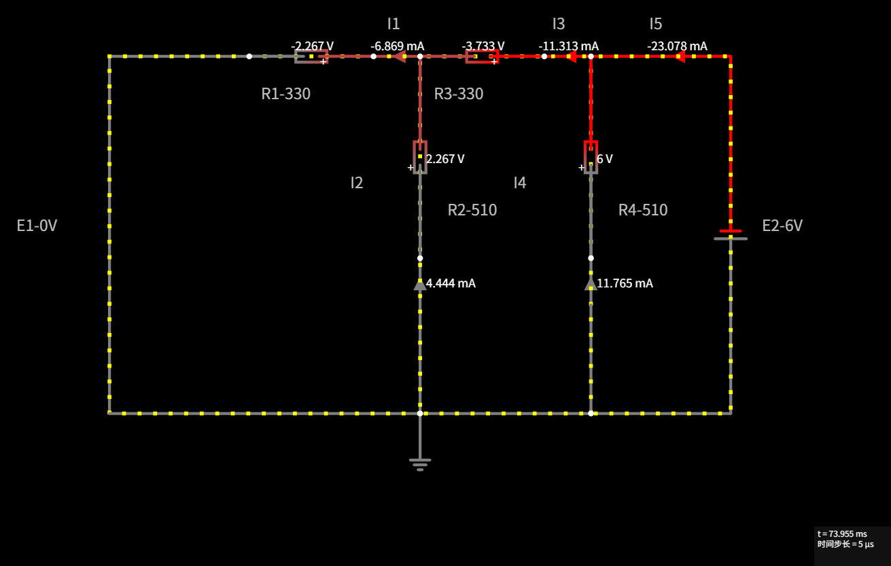
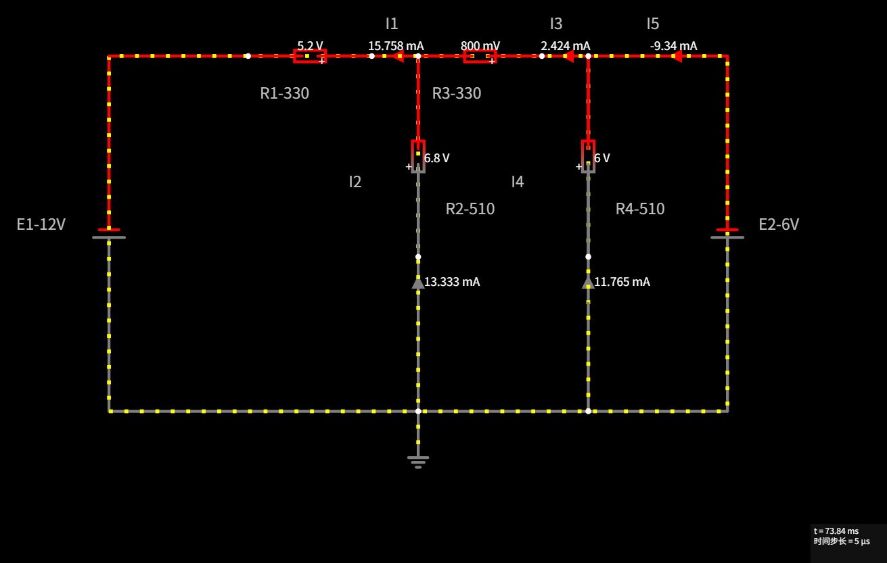

本页配合任务书《叠加定理实验》使用。电路已在 eetree 的 CircuitJS 里搭好、 仪表已摆好，点下面的链接就会自动打开对应工况，画布上直接显示 5 个电流和 4 个电压。
| 能力 | 结论 | 说明 |
|---|---|---|
| 用链接直接载入电路 | ✅ 支持 | circuitjs.html?cct=<电路文本>（%XX 形式的 URL 编码） |
| 读回仿真数据（接口） | ❌ 不支持 | 页面由 GWT 编译，画布是 canvas，没有 JSON / JS API |
| 在画布上显示读数 | ✅ 支持 | "绘制 → 输出和标签 → 电流表 / 电压表探头" |
实测可用的 URL 参数：cct（电路文本）、ctz（压缩短链，站内"创建短链接"）、
startCircuit、startLabel、running、hideMenu、
hideSidebar、editable、whiteBackground、conventionalCurrent。
打开链接后，电路里已经放好：
（电流表和探头上的小箭头 / "+"号表示元件在画布上的绘制方向，读数已统一换算到任务书的参考方向。）
读数已按任务书的参考方向取正负：I₁、I₃ 向右为正，I₂、I₄ 向下为正，I₅ 向右为正； U_R1、U_R3 左"+"右"−"，U_R2、U_R4 上"+"下"−"。所以工况②里 I₁、I₃、I₅、U_R1、U_R3 显示负值，是正确的。
| 工况 | I₁/mA | I₂/mA | I₃/mA | I₄/mA | I₅/mA | U_R1/V | U_R2/V | U_R3/V | U_R4/V |
|---|---|---|---|---|---|---|---|---|---|
| E₁ 单独激励 | 22.626 | 8.889 | 13.737 | 0.000 | 13.737 | 7.467 | 4.533 | 4.533 | 0.000 |
| E₂ 单独激励 | -6.869 | 4.444 | -11.313 | 11.765 | -23.078 | -2.267 | 2.267 | -3.733 | 6.000 |
| E₁、E₂ 共同激励 | 15.758 | 13.333 | 2.424 | 11.765 | -9.340 | 5.200 | 6.800 | 0.800 | 6.000 |
仪表显示会省略末尾的 0（例如 5.2 V 即 5.200 V，9.34 mA 即 9.340 mA）。
叠加校验见报告正文。



点击图片可查看原始大图。
Delete 删除，右键可编辑参数。如果将来网站改版导致上面链接失效，可以手动导入电路文本：
https://www.eetree.cn/circuitjs/circuitjs.html；电路文件 文件夹里对应工况的 .txt（如 工况3-共同激励.txt）内容整段复制粘贴进去，点"确定"。电路文本也可以直接在浏览器地址栏里拼：…?cct= 后面接这段代码做 URL 编码。
根目录的 电路文本.txt 把三个工况的代码放在了一起（纯代码，按 ① ② ③ 顺序，段间空一行）。
flags 预设好这些开关。
叠加定理虚拟实验\
├─ 操作指南.html ← 本页
├─ 叠加定理实验报告.docx ← 按模板填写的实验报告（含截图附录）
├─ 电路文本.txt ← 三工况的电路代码（只有代码，顺序①②③）
├─ 链接.txt ← 三条工况的完整链接（可直接复制粘贴）
├─ 电路文件\
│ ├─ 工况1-E1单独激励.txt ← 只有代码，纯文本
│ ├─ 工况2-E2单独激励.txt
│ └─ 工况3-共同激励.txt
└─ 仿真截图\
├─ E1单独激励.png
├─ E2单独激励.png
└─ 共同激励.png
三个 txt 就是"粘到网站里就能生成电路"的代码（每行一个元件），可在站内"文件 → 从文本导入"重复使用； 三张 PNG 是画布截屏，报告附录里已插入。